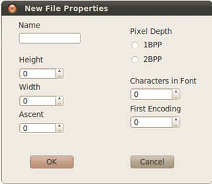
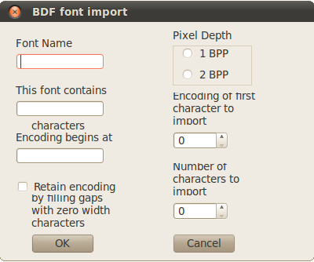

New
Open
Import BDF Font
Import Image
Concatenate Fonts
Save
Save As
Print
Print Preview
Exit
Creates
a new BOB-4 font document.

Opens an existing BOB-4 font document.
Opens a BDF font file and converts it to a BOB-4 font format file. After the BDF file is selected, the “Import Font” dialog box is opened. This dialog allows you to set the BOB-4 font name, choose whether to import the font as 1bpp or 2bpp (bits per pixel), and specify which characters to import.

Font Name:
The internal name of the font (not the file name). This is the name that appears in the BOB-4 configuration report. The Font Name must be placed in the BOB-4 String buffer in order to select a font by name with the z command. Font Names can be revised through the Edit-->Font Name menu.
The two fields below Font Name display the number of character glyphs included in the BDF source file and its first character's code value.
Pixel Depth:
Controls the desired pixel depth (in bits per pixel) for imported fonts. Can be changed later with the Edit-->Pixel Depth menu selection.
Encoding of first character to import:This field selects the first character imported from the BDF font. By default it is set to the first character in the font.
Number of characters to import:The total number of characters to import. Defaults to 95, which is the number of printable ASCII characters.
For display by BOB-4 modules, bitmap image files must be converted into BOB-4 font (.b4f) files.
Imported images are converted to single-character fonts which may then be downloaded to BOB-4
and stored in flash memory.
The BOB-4 Conscriptor can import bitmap graphics files of the following types:
bmp, gif, jpeg, jpg, png, pbm, pgm, tiff, xbm, xpm
Image Conversion
In order to be displayed by BOB-4, the color depth of an image must be either two-color (one bit per
pixel; 1bpp) or three-color (2bpp) and the font must be smaller than 255x255.
1bpp images may be imported directly. In all other cases, imported
images are first converted to 8-bit greyscale and displayed in the right pane
of the "Threshold Image" dialog.
Threshold levels (white level for 1bpp; white and black level for 2 bpp) must then be manually
adjusted using the “White Threshold” and “Black Threshold” sliders
for best visual results.
For a 2bpp image, any color value below the black threshold is rendered
black (local mode) or transparent (genlock mode). Any color value above the white threshold
is rendered white. Values between the thresholds are rendered grey (local mode)
or halftone (genlock mode). Black and white pixels may be reversed with the
“Invert Image” button.
“Black + White” button will display the image in your chosen color set.
Imported images may optionally be saved with “Save Modified Image” button,
these images are not directly usable as BOB-4 font files.
Saving and Downloading to BOB-4
After clicking the Threshold Image “OK” button, the Font Editor will be activated.
In Font Editor, you may save the converted image as a font file.
This file can then be downloaded to BOB-4 through the Serial-->Download-->Font menu.
Image fonts may be combined with other BOB-4 font files and stored in a single
memory device. To make BOB-4 display the image, select the desired image font
(see z command) and send BOB-4 a space <SP> character (ASCII 32 or 0x20).
NOTE: Horizontal compression of images will occur with BOB-4's default display settings. To fix this, reconfigure BOB-4 to yield 'square pixels' (4:3 aspect ratio), or pre-compensate images with “FixPAL” button or “FixNTSC” as appropriate. In the BOB-4 Application Guide, see the vr command (n=20~23).
Concatenate
Fonts
Combines two or more font files for downloading to BOB-4. Select desired files
from the “Open” dialog box. Select multiple files by holding the
Ctrl key as you left-click the desired files. After files are
selected, left-click the “Open” button. When the “Save”
Dialog appears, select a file name for the concatenated font file and left-click
the “Save” button.
Save
Saves an open BOB-4 font file without changing the file name (overwrites the
previous version).
Save
As
Requests a new file name for saving an open BOB-4 font file.
Print
Prints the current fontset on the system printer.
Print Preview (not implemented)
Exit
Quits the BOB-4 Conscriptor program and returns control to the operating system.